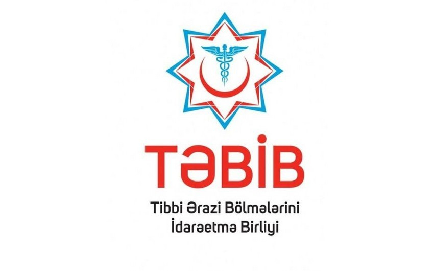

TƏBİB-in tabeli tibb müəssisələrinə yeni rəhbər şəxslər təyin olunublar
TƏBİB-in İcraçı direktoru Vüqar Qurbanovun təqdimatı ilə bəzi tibb müəssisələrinə yeni direktorlar təyin olunub.
BAKU.WS xəbər verir ki, Ağstafa, Salyan, Qobustan və Şamaxı rayon mərkəzi xəstəxanalarına təyinatlar həyata keçirilib.
Yeni direktorlar kollektivə təqdim olunub, vəzifələrinin icrasına başlayıblar.
Ağstafa Rayon Mərkəzi Xəstəxanasına Səyyad Yusifov direktor vəzifəsinə təyinat alıb.
Səyyad Yusifov ixtisasca həkim-infeksionistdir.
Səyyad Yusifov 1996-2001-ci illərdə Azərbaycan Tibb Universitetinin Tibbi-profilaktika və tibbi-biologiya fakültəsində təhsil alıb. 2007-2008-ci illərdə Ə.Əliyev adına Azərbaycan Dövlət Həkimləri Təkmilləşdirmə İnstitutunda yoluxucu xəstəliklər üzrə təhsilini davam etdirib.
2006-cı ildən indiyədək Tovuz Rayon Mərkəzi Xəstəxanasında müxtəlif vəzifələrdə çalışıb.
O, bu təyinatadək Tovuz Rayon Mərkəzi Xəstəxanasının direktorunun ilkin səhiyyə xidmətləri üzrə müavini vəzifəsini icra edib.
Salyan Rayon Mərkəzi Xəstəxanasına Şirin Səmədova direktor təyin olunub.
Ş.Səmədova 1992-1998-ci illərdə Azərbaycan Tibb Universitetinin Pediatriya fakültəsində təhsil alıb. 1998-1999-cu illərdə Salyan Rayon Mərkəzi Xəstəxanasında internatura təhsili alıb.
1999-2006-cı illərdə Salyan Rayon Mərkəzi Xəstəxanasının nəzdində olan Arbatan kənd həkim məntəqəsində həkim-pediatr, 2006-2008-ci illərdə rayon mərkəzi xəstəxanasının Yoluxucu xəstəliklər şöbəsində həkim-pediatr, infeksionist vəzifəsində çalışıb. 2008-2012-ci illər ərzində Şirvan Şəhər Mərkəzi Xəstəxanasının nəzdində olan Uşaq poliklinikasının şöbə müdiri, həkim-pediatr, 2012-2021-ci illər ərzində Birləşmiş Uşaq Xəstəxanasının baş həkimi vəzifələrində fəaliyyət göstərib.
2021-2023-cü illər ərzində TƏBİB-in Koordinasiya departamentinin Cənub ərazi bölgəsi üzrə koordinatoru, 2023-cü ildən indiki təyinatınadək isə Daxili nəzarət və monitorinq departamentinin Monitorinq şöbəsinin böyük məsləhətçisi vəzifəsində çalışıb.
Şamaxı Rayon Mərkəzi Xəstəxanasına direktor təyin olunan İmran Qurbanov 1985-1991-ci illərdə Azərbaycan Dövlət Tibb Universitetində Müalicə işi fakültəsini bitirib, ixtisasca cərrahdır.
O, 1992-1993-cü illərdə “N” saylı hərbi hissənin tibb bölüyünün baş ordinatoru, 1993-1994-cü illərdə “N” saylı hərbi hissənin tibb bölüyünün komandiri və baş cərrahı, 1994-1997-ci illərdə Azərbaycan Respublikası Müdafiə Nazirliyinin Baş Qərargah Poliklinikasının Cərrahiyyə şöbəsinin müdiri vəzifələrində çalışıb.
O, 1997-2021-ci illər ərzində Akademik M.Ə.Mirqasımov adına Respublika Klinik Xəstəxanasında şöbə müdiri, baş həkimin cərrahiyyə işləri üzrə müavini kimi fəaliyyət göstərib.
2021-2023-cü illərdə TƏBİB-in Tibbi xidmətlərin təşkili departamentinin Tibbi koordinasiya şöbəsinin baş məsləhətçisi vəzifəsində çalışıb.
İmran Qurbanov bu təyinatadək Qobustan Rayon Mərkəzi Xəstəxanasının direktoru vəzifəsində çalışıb.
Qobustan Rayon Mərkəzi Xəstəxanasının direktor vəzifəsinə isə Günay Muradova təyinat alıb.
Günay Muradova 1998-2004-cü illərdə Azərbaycan Beynəlxalq Universitetində, 2004-2005-ci illərdə Azərbaycan Tibb Universitetində pediatr ixtisasına yiyələnib.
2023-cü ildən Azərbaycan Respublikası Prezidenti yanında Dövlət İdarəçilik Akademiyasında Menecment ixtisasında təhsil alır.
2004-2005-ci illərdə Respublika Klinik Uşaq Xəstəxanasında həkim-pediatr kimi işləyib.
2007-2020-ci illərdə 4 saylı Birləşmiş Uşaq Xəstəxanasında, 2015-2019-cu illərdə müxtəlif özəl tibb müəssisələrində həkim-pediatr işləyib. 2020-ci ildən bu təyinatadək TƏBİB-in Tibbi sığorta departamentinin Tibbi göndərişlər şöbəsinin baş məsləhətçi vəzifəsində çalışıb.
Masallıda yeraltı qazıntı zamanı boru zədələnib, 800 abonent qazsız qalıb
Masallıda yeraltı qazıntı zamanı boru zədələnib.
"Report"un yerli bürosunun məmulatına görə, rayonun Səmidxan kəndində yeraltı kabelin çəkilməsi üçün qazıntı işləri aparılan zaman diametri 160 mm-lik boru zədələnib.
Nəticədə 800 abonentin qaz təminatı dayandırılıb.
Qaz təchizatı avadanlıqlarını nəzarətdə saxlamaq və təhlükəsizlik tədbirlərinə riayət etmək xahiş edilir.
AEM dərman vasitələrinin idxalı ilə məşğul olanlara xəbərdarlıq edib
Analitik Ekspertiza Mərkəzi dərman vasitələrinin idxalı ilə məşğul olan hüquqi və fiziki şəxslərə xəbərdarlıq edib.
AEM-dən BAKU.WS -ə verilən xəbərə görə, “Dərman vasitələri haqqında” Azərbaycan Respublikasının Qanununa (bundan sonra-Qanun) 14 iyul 2023-cü il tarixli № 979-VIQD nömrəli edilən dəyişikliklərə əsasən, dərman vasitələrinin Azərbaycan Respublikasına idxalına icazənin verilməsindən imtina halları müyyən edilib.
Qanunun 9-1.16.2-ci maddəsinə görə, bu hallardan biri, idxal olunan dərman vasitələri (dövlət qeydiyyatı məqsədilə idxal edilən, sərgidə nümayiş etdirilmək üçün nəzərdə tutulan, nadir hallarda rast gəlinən və spesifik müalicə tələb edən xəstəliklərin müalicəsi üçün nəzərdə tutulan dərman vasitələri istisna olmaqla) dövlət reyestrinə daxil edilmədikdə və ya dərman vasitələrinin idxalına icazə verilənədək dövlət qeydiyyatının qüvvədə olma müddəti bitdikdə dərman vasitələrinin idxalına icazənin verilməsindən imtina qərarının qəbul edilməsidir.
Yəni idxala icazə verilən günə ölkəyə idxal olunan dərman vasitəsinin dövlət reyestrində olması zəruridir. Bu o deməkdir ki, AEM tərəfindən idxala icazə məktubu verilən günə qeydiyyat vəsiqəsi qüvvədə olmalıdır. Əks halda idxala icazə verilməyəcək.